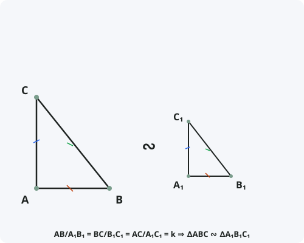

III признак подобия треугольников
Формулировка
Если три стороны одного треугольника пропорциональны трём сторонам другого треугольника, то такие треугольники подобны.
Обозначения
Пусть даны два треугольника: ABC и A₁B₁C₁.
AB/A₁B₁ = k — отношение первой пары сторон.
BC/B₁C₁ = k — отношение второй пары сторон.
AC/A₁C₁ = k — отношение третьей пары сторон.
Тогда: ∆ABC ∾ ∆A₁B₁C₁

Доказательство
Теорема доказана.
Следствия из теоремы
- Если три стороны одного треугольника пропорциональны трём сторонам другого, то их соответствующие углы равны.
- Отношение периметров подобных треугольников равно коэффициенту подобия k.
- Отношение площадей подобных треугольников равно k².
- Любые два равносторонних треугольника подобны.
- Если k = 1, то треугольники равны (III признак подобия превращается в III признак равенства).
Примеры применения
Пример 1. В треугольниках ABC и A₁B₁C₁: AB = 6, BC = 8, AC = 10; A₁B₁ = 3, B₁C₁ = 4, A₁C₁ = 5. Докажите, что треугольники подобны.
Решение: AB/A₁B₁ = 6/3 = 2, BC/B₁C₁ = 8/4 = 2, AC/A₁C₁ = 10/5 = 2. По III признаку ∆ABC ∾ ∆A₁B₁C₁.
Пример 2. Стороны одного треугольника равны 12, 16, 20, а другого — 9, 12, 15. Найдите коэффициент подобия и отношение площадей.
Решение: k = 12/9 = 4/3. Отношение площадей S₁/S₂ = k² = 16/9.
Пример 3. Докажите, что средняя линия треугольника отсекает от него треугольник, подобный исходному.
Решение: Средняя линия MN делит стороны AB и AC пополам. AM/AB = AN/AC = 1/2, MN = BC/2. По III признаку ∆AMN ∾ ∆ABC с k = 1/2.
Историческая справка
III признак подобия треугольников был известен ещё в Древней Греции. Евклид в «Началах» (Книга VI, Предложение 5) формулирует и доказывает этот признак.
Этот признак является естественным обобщением III признака равенства треугольников: если k = 1, треугольники равны, если k ≠ 1 — подобны.
В средние века III признак подобия использовался в архитектуре для создания пропорциональных копий зданий и в картографии для составления карт разных масштабов.
Интересные факты
- III признак подобия часто обозначают аббревиатурой «ССС» (сторона-сторона-сторона) или «SSS» (Side-Side-Side).
- Это единственный признак подобия, не требующий знания углов.
- III признак подобия — самый надёжный способ проверки подобия, так как длины сторон измерить проще, чем углы.
- В отличие от равенства треугольников, для подобия достаточно пропорциональности сторон, а не их равенства.
- С помощью III признака можно доказать, что любые два квадрата подобны, а любые два круга подобны.